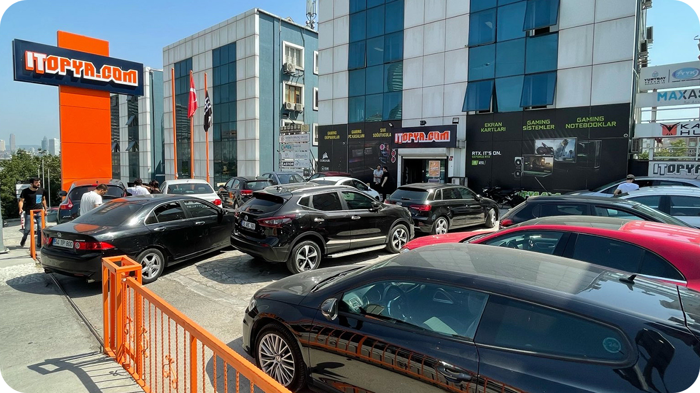
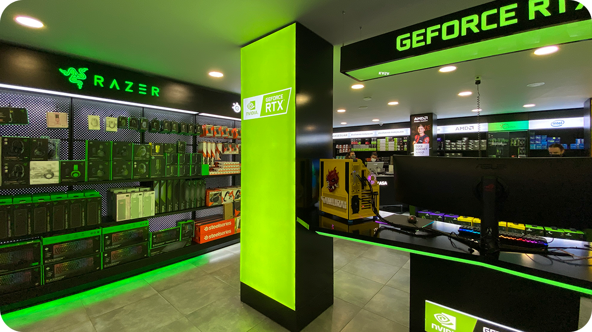
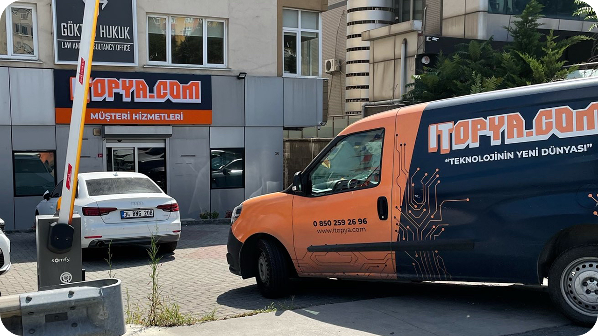

| |
| ANASAYFA | HAKKIMIZDA | ÜRÜNLER | İLETİŞİM |
|---|
ITOPYA.COM olarak Toplama Bilgisayar, Gaming Notebooklar ve Gaming Ürünlerin perakende satışını gerçekleştirmek amacıyla yenilikçi mağazacılık anlayışı ve gelişmiş web sitesi özellikleriyle kullanıcılarımıza teknolojik çözümler sunan bir marka olarak 2016 yılında yola çıktık. Markamızdaki IT kısaltması "Bilişim Teknolojileri"ni ifade ederken, logomuza renk veren turuncu ise dinamik yapımızı ve mutlu ekip mutlu müşteri prensibimizi temsil eder.
Bugün Toplama Bilgisayar, Gaming Notebook ve Gaming Ürünler alanında Türkiye'nin en büyük e-ticaret platformlarından biriyiz. Ticari faaliyetlerimize e-ticaret ile başlayıp kurulduğumuz günden bugüne geniş ürün yelpazesi ve daha fazla kullanıcıya ulaşma hedefiyle mağazalarımızın açılışlarına başladık.
İlk mağazamızın açılışını 2017 yılında Acıbadem lokasyonunda gerçekleştirdik. Sürdürebilirliği bozmadan aldığımız talepler ve stratejik hedeflerimiz doğrultusunda 2020 yılında Beylikdüzü mağazamızı açılışını sağladık. Büyüyen şirketimizin depo alanını genişletip siparişlerimizin kargo süreçlerini en hızlı şekilde sağlayabilmek adına eş zamanlı 9000 m²’lik alanıyla Kartal Operasyon Merkezimizin açılışını gerçekleştirdik.
2021 itibariyle merkez ofisimiz dışında Acıbadem Şubemiz, Beylikdüzü Şubemiz ve Kartal Operasyon Merkezimizle hizmetinizdeyiz. Hizmet sağladığımız tüm noktaları daha yakından tanımanızı isteriz!
Adres: Hasanpaşa Mahallesi, Lavanta Sokak, Etap İş Merkezi D Blok No: 22, Kadıköy/İstanbul
|  |  |  |
| Acıbadem mağazamız D100 karayolu üzerinde, Avrasya Tüneli çıkışında, kolay erişilebilir konumuyla hem Metro ve Metrobüs olanaklarıyla yaya olarak hem de Göztepe ve Ünalan bağlantı yollarıyla kolay ulaşılabilme olanağına sahiptir. | Acıbadem mağazamız içerisinde Türkiye'nin en fazla Gaming Ekipman ve Bilgisayar Özelleştirme seçeneğini bulabilirsiniz. Mağazamızda 2021 yılının sonunda özel konseptiyle yenileme işlemi gerçekleşmiştir. | Acıbadem Müşteri Hizmetleri Merkezimize Garanti Hizmeti için ürünlerinizi getirebilir, iade işlemlerinizi kolaylıkla yapabilirsiniz. Ayrıca ürünleriniz hakkında sorularınızı bankodaki ekip arkadaşlarımıza iletebilir, yanıtlarınızı kolayca alabilirsiniz. |